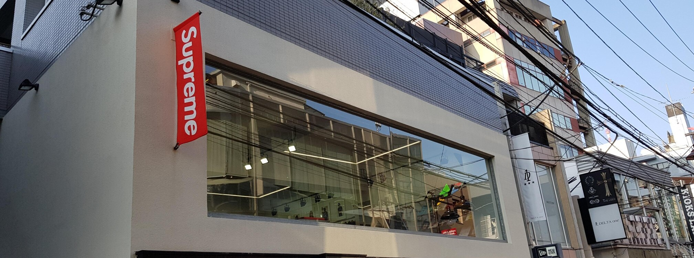

SUPREME
Supreme adalah sebuah merek pakaian dan papan luncur asal Amerika Serikat yang didirikan di New York City pada bulan April 1994. Merek ini mencoba mengangkat budaya seluncur papan dan hip hop, serta budaya pemuda secara umum. Merek ini memproduksi pakaian, replika, aksesoris, serta papan luncur. Sepatu, pakaian, dan aksesorisnya juga dijual di pasar sekunder. Logo kotak merah khas "Supreme" dengan huruf Futura Heavy Oblique berwarna putih terinspirasi dari seni propaganda Barbara Kruger. Supreme merilis produk baru melalui gerai ritelnya di seluruh dunia serta di situs webnya tiap hari Kamis pagi di Eropa dan Amerika, serta pada hari Sabtu di Jepang.
SEJARAH
Merek ini didirikan oleh James Jebbia. Walaupun ia lahir di Amerika Serikat, ia tinggal di Inggris hingga berusia 19 tahun. Jebbia awalnya bekerja sebagai manajer Stussy di New York pada awal dekade 1990-an.
Gerai pertama Supreme dibuka di sebuah bangunan kantor tua di Lafayette Street di pusat kota Manhattan pada bulan April 1994. Produknya didesain sesuai selera para pemain papan luncur, dan gerainya didesain secara unik, dengan menyusun pakaian di dekat dinding gerai, sehingga bagian tengah gerai tetap kosong, dan memungkinkan para pemain papan luncur yang memakai tas punggung untuk masuk dengan menaiki papan luncurnya ke dalam gerai. Gerai ini mempekerjakan sejumlah pemain papan luncur pada awal berdiri, termasuk Justin Pierce dan Harold Hunter, serta pegawai pertamanya merupakan pemeran figuran dari film Kids.
Pada tahun 2004, gerai kedua resmi dibuka di North Fairfax Ave di Los Angeles, California, dan berukuran hampir dua kali lipat daripada gerai pertama di New York City, serta dilengkapi fasilitas arena papan luncur dalam ruangan. Gerai lain kemudian dibuka di Paris pada tahun 2016, di London pada bulan September 2011, Tokyo (Harajuku, Daikanyama dan Shibuya), Nagoya, Osaka, dan Fukuoka. Gerai baru ini meniru konsep gerai di Lafayette Street, yakni menggunakan musik dan video untuk menarik perhatian.
Supreme juga menjual produk dari produsen lain, seperti Vans, Nike SB, Spitfire, Thrasher, Girl Distribution Company, dan lain sebagainya. James Jebbia menyatakan bahwa semua produk Supreme bukanlah "edisi terbatas," namun mereka memang sengaja hanya memproduksi dalam jumlah kecil, karena "tidak ingin menumpuk produk yang kurang laku."
Pada tanggal 5 Oktober 2017, Supreme membuka gerai ke-11 sekaligus gerai kedua di New York City, tepatnya di Williamsburg, Brooklyn. Pada tanggal 6 Oktober 2017, James Jebbia membenarkan bahwa mereka telah menjual sekitar 50% saham Supreme (senilai sekitar $500 juta) ke The Carlyle Group. Pada tanggal 25 Februari 2019, Supreme memindahkan gerainya di Manhattan dari Lafayette Street no. 274 ke Bowery no. 190.
Supreme membuka gerai ke-12 di Market Street di San Francisco, pada tanggal 24 Oktober 2019.in 1999 color of supreme from cappoera BAKER skater and tees.
Supreme Store by Bima Rakajati © 2021.